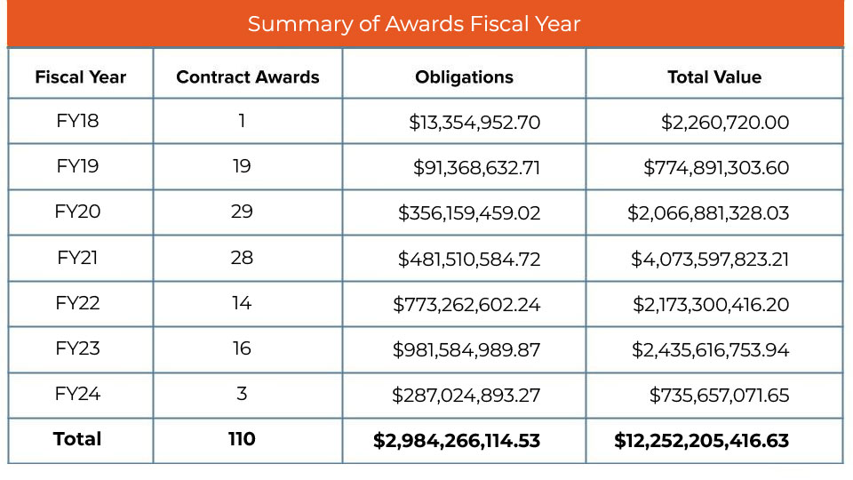
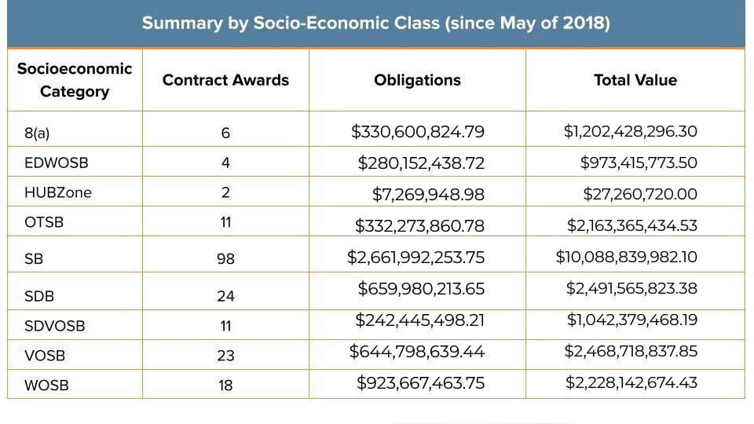

Please use the buttons above to contact the team and get started on your SBIR project. Additional documents will be emailed to SBIRFacilitations@gsa.gov once your form is submitted.
Working with AAS on SBIR Phase III requires appropriate documentation. Please refer to the following list of required documents. AAS will help you, as needed and as appropriate, to complete your contract package.
If you are a potential Federal client who is interested in obtaining AAS services, please contact us at gsasbir-sttr@gsa.gov.
View the SBA's List of Fraud, Waste, and Abuse.
To report suspected fraud, waste, and/or abuse on a SBIR/STTR work that has been awarded by an AAS CSC, please contact Danielle Grunwald.
Click on the stories below to read more.
STORY
01
Story 01
STORY
02
Story 02
STORY
03
Story 03
STORY
04
Story 04


Select "Answer:+" and "Answer:-" to toggle the answers to each question.
Answer: + -
Phase III awards may result from prior Phase I, Phase II, and/or other Phase III funding agreements.
Answer: + -
No. Phase III work does not have to be awarded on behalf of a participating agency so long as the Phase III work is derived from, extends, or completes work from one or more funding agreements. Any federal agency may award a Phase III funding agreement.
Answer: + -
No. There is no limit on the number, duration, type or dollar value of Phase III awards made to a firm.
Answer: + -
No. The Phase III awardee can be any size.
Answer: + -
No. There is no time limit on the time that may elapse between a Phase I and/or Phase II award and a Phase III award, or between a Phase III award and any subsequent Phase III award.
Answer: + -
No. Competition conducted in Phase I/II satisfies all Federal competition requirements so no additional competition is required for Phase III. However, Phase III awards may also result from competitive solicitations.
Answer: + -
No. All Phase III SBIR awards must be funded entirely by non-SBIR/STTR funds.
Answer: + -
The process flow chart can be seen below.
Click on the chart to open it in a new window.
Answer: + -
The SBIR/STTR Initial Info is the initial information that will assist us in determining whether we have the bandwidth to accept a new requirement.
Answer: + -
Yes. GSA is interested in knowing about the current data rights and the cyber supply chain risk management health of the Phase III awardee prior to considering whether a direct award is in the best interest of the Government. We are also interested in private sector sales information, although that will not necessarily deter us from accepting a requirement.
Answer: + -
Once it is determined that GSA is able to support you, we will need the SBIR/STTR Intake documents.
Answer: + -
That answer depends on whether or not the work is severable, the type of funding and expiration of those funds, and the mission need. Once AAS has the details, we will work with the customer to determine the appropriate contract duration. For IDIQs, most have been written with a five year ordering period.
Answer: + -
GSA/AAS is a 100% non-appropriated fee for service business operation. In most situations we use a surcharge billing model in which we negotiate a percentage surcharge at the order level. Rates depend on the amount of contract spend and the level of effort required to manage the contract. For planning purposes, estimate a fee somewhere in between the 3-6% range.
Answer: + -
The customer and GSA CO/COR team will discuss the requirement in detail and the deliverables can then be identified. For IDIQs, they may be either at parent vehicle level or at the order level, depending on the specific deliverable required.
Answer: + -
The lead time for a new award varies depending on many factors, including: anticipated contract ceiling value, type of contract, maturity of initial requirements documents, GSA workload and capacity, breadth of contract scope, and perhaps others. Under current GSA workload constraints, it is reasonable to assume somewhere between 90 and 180 days from receipt of a complete initial requirements package. Early in the process, your GSA AAS Project Manager will develop a detailed acquisition schedule and will keep you apprised of progress throughout the process.
Answer: + -
We follow the procedures of the customer/requiring agency so the process can vary. Sometimes the authorized agency representative for the customer agency (e.g. a security manager) is the certifying official and and sometimes the customer requests that the GSA Contracting Officer sign. Of course, the DD Form 254, instructions, and applicable clauses are included in the solicitations and resultant awards.
Answer: + -
Timelines for new order awards and modifications to existing contracts or orders are based upon the complexity of the requirement and the workload of the contracting team. To initiate a new task order on an IDIQ contract, a fair assumption is that it will be completed in 30 days or less. Adding funding can usually be accomplished within a week.
Answer: + -
The customer works closely with a GSA COR and the GSA Contracting Officer. Although the customer doesn’t report to GSA, the Contracting Officer is responsible for the proper oversight and administration of the SBIR Phase III work and usually requires assistance from the technical POC.
Answer: + -
This will need to be discussed with the GSA CO/COR team. Several Phase III contracts for services or additional R&D have been written to require the contractor to submit a monthly invoice and then AAS will pay accordingly. Other arrangements are possible.
Answer: + -
Most of the time we have a list. You will identify them at the IDIQ level or at the order level. You and your CO/COR team will determine the details.
Answer: + -
The contractor will submit the invoice into our work management system. You, the customer technical POC, will review and validate, our GSA COR will accept, then payment will be made to the contractor.
Answer: + -
That depends on what you are buying and what you need. Do you need a monthly report? That is very common. Most of our contracts for services or R&D are set up that way. It makes Quality surveillance and CPARs reporting much easier.